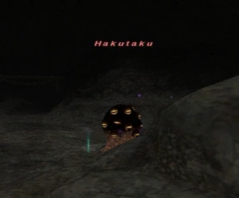

Level 75 reference · Zenith rules
|
Job: Black Mage Notorious Monster |
 |

|
Zone |
Level |
Drops |
Steal |
Spawns |
Notes | ||||||
|
85 |
1 |
A, H
| |||||||||
|
HP = Detects Low HP; M = Detects Magic; Sc = Follows by Scent; T(S) = True-sight; T(H) = True-hearing JA = Detects job abilities; WS = Detects weaponskills; Z(D) = Asleep in Daytime; Z(N) = Asleep at Nighttime | |||||||||||
Notes:
- Spawned by trading a Hakutaku Eye Cluster to the ??? at (H-8)
- Uses the attacks:
- Fire IV
- Firaga III
- Flare
- Hex Eye - Cone attack paralysis (Gaze Attack)
- Death Ray - Single-target darkness attack
- Is highly resistant to Fire magic.
- Killable by 6-18 level 70+ players.
- Killable by a party of BST (recommended 74-75). High CHR recommended to avoid numerous mischarms.(the fight took about 1 hour~1 hour 10 min in a party of 4 BST.)----- See 'discussion' page for tips on this method.
- About 50,000 HP.
Video
See Video.
Adapted from Eden Wiki: Hakutaku · Contributors and history · CC BY-SA 4.0. Revision 44781. Layout, links and optional background text adapted for Zenith.